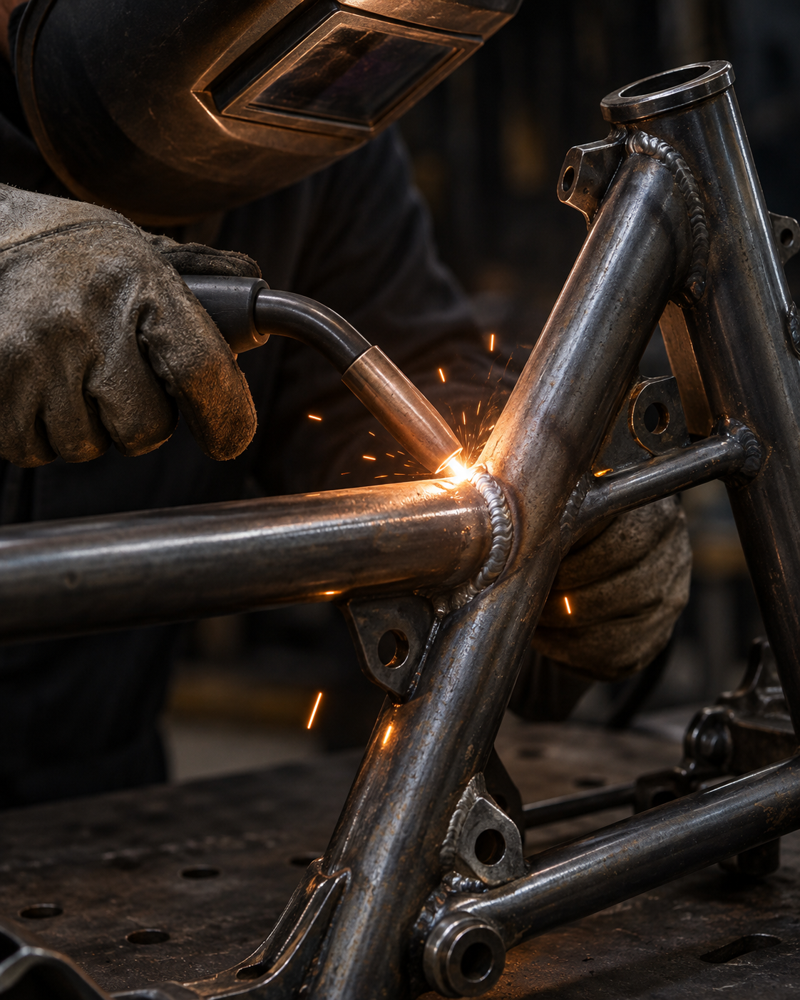
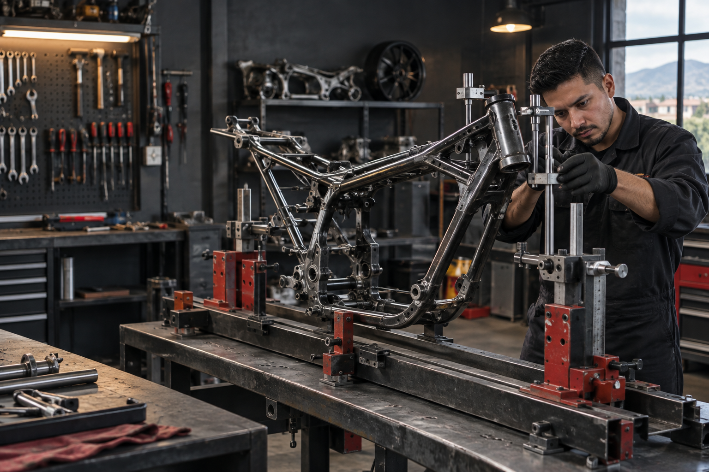
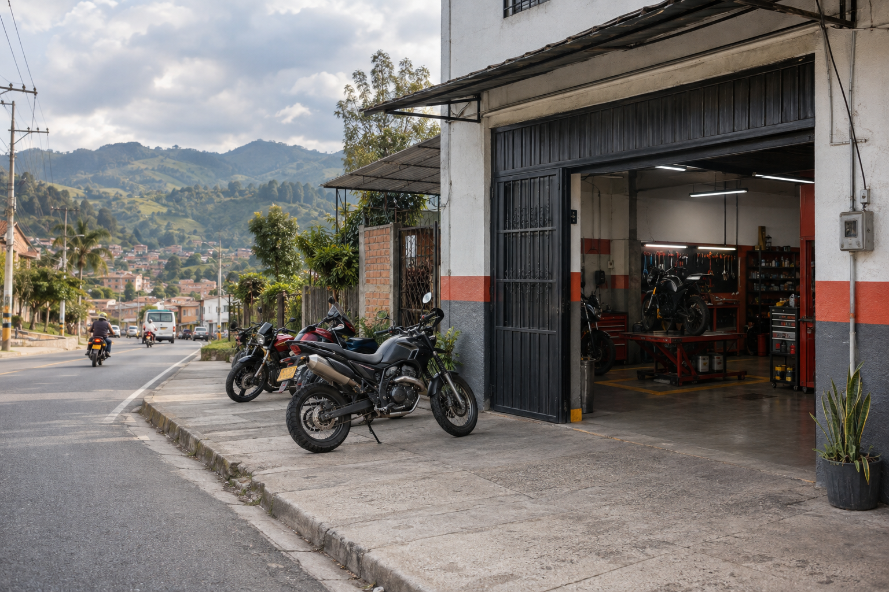

01
Soldadura especializada
Reparamos fisuras, roturas y uniones en chasis o tubería con acabados limpios y resistentes.
Taller especializado · Marinilla
Soldadura, alineación y reparación estructural de chasis para motocicletas. Trabajo preciso, directo y hecho para volver a rodar.
Galería / Trabajo en detalle



01 / El oficio
Un chasis desalineado cambia la forma en que la moto responde. En Chasis Marañas revisamos el daño, corregimos la geometría y reparamos el metal con criterio.
02 / Qué hacemos
Intervenimos la estructura de tu moto con herramientas, medida y experiencia de taller.
Reparamos fisuras, roturas y uniones en chasis o tubería con acabados limpios y resistentes.
Corregimos daños estructurales provocados por accidentes, golpes o desgaste para recuperar la geometría.
Encontramos la solución para estructuras complejas o acumuladas y reforzamos donde realmente hace falta.
03 / Consulta rápida
Selecciona lo que estás notando. Prepararemos el mensaje para que puedas enviar fotos y recibir una orientación inicial por WhatsApp.
04 / Cómo trabajamos
Escuchamos qué pasó y revisamos el chasis antes de intervenir.
Alineamos, soldamos o reforzamos según el daño real.
Te explicamos el trabajo realizado para que vuelvas a rodar con claridad.
05 / Así trabajamos
Una mirada al proceso: precisión en cada unión, alineación y refuerzo para que tu moto vuelva a sentirse firme.
Muéstranos el daño. Te ayudamos a entender el siguiente paso.
Escribir por WhatsApp06 / La experiencia
Cuando el trabajo queda bien, se siente en la estabilidad, los acabados y la confianza para volver a rodar.
“Me explicaron el daño antes de empezar y me entregaron la moto mucho más estable.”
“Se nota el cuidado en la alineación y en los acabados de la soldadura.”
“Pude enviar fotos por WhatsApp y saber qué revisar antes de llevarla.”
Horario de atención
Escríbenos antes de salir y coordinamos la recepción de tu moto.
08 / Ven a conocernos
Llegar es fácil. Estamos en el sector La Bomba, con atención directa para revisar tu moto.